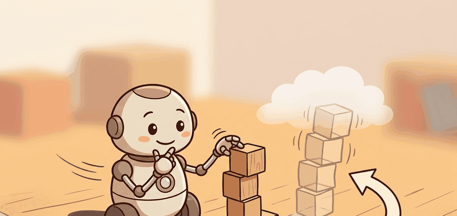

"I made a future, then the robot took one step and asked for a revision."

Figure 38.3A: Section 38.3: Dreamer to DreamerV3 becomes easier to reason about when the reader can see the perception, decision, action, and feedback loop as one physical situation.
A Compact Latent State
Big Picture
Dreamer To DreamerV3 matters because embodied intelligence is a closed loop. The agent must sense, represent, predict, decide, act, observe the consequence, and revise its belief before the next action.
What This Section Develops
This section turns Dreamer To DreamerV3 into a usable mental model. First we define the decision problem, then we connect it to the perception-action loop, then we test it with a compact implementation that exposes the measurable contract.
The practical question is not whether the model looks impressive. The question is which action becomes easier, safer, more data-efficient, or more recoverable when the method is inserted into the loop.
Action Is The Test
A model earns its place only when it improves action. In Dreamer To DreamerV3, the reader should keep asking which decision changes, which uncertainty is exposed, and which failure mode becomes easier to diagnose.
Theory
At time $t$, the agent receives an observation $o_t$, maintains an internal estimate $\hat s_t$, chooses an action $a_t$, and observes a consequence $o_{t+1}$. Dreamer To DreamerV3 changes how the agent predicts or evaluates one part of that loop, but the closed-loop contract stays fixed.
The useful abstraction is a contract with five fields: observation, state or representation, action, prediction horizon, and success metric. If any field is missing, a method comparison can become a story assembled from incompatible experiments.
Mechanism
The mechanism is observe, encode, predict, score, act, and monitor. Each transformation needs a measurable input, output, timing assumption, and failure label so debugging does not collapse into guessing.
Worked Example
The following compact probe makes Dreamer to DreamerV3 concrete. It keeps the environment small enough to inspect, but it still records the quantities a real embodied system would need before trusting the method.
# Roll a compact latent state forward and score action relevance.
# Decoder-free diagnostics focus on control variables, not pixel detail.
import numpy as np
latent = np.array([0.2, -0.1, 0.4])
action = np.array([0.05, 0.10, -0.02])
value_weights = np.array([1.0, -0.5, 0.25])
for step in range(4):
latent = 0.92 * latent + action
value = latent @ value_weights
print(step, round(float(value), 3))
The printed latent value trace checks whether imagined states preserve the variables that matter for choosing actions.
Code Fragment 38.3.1 implements latent_rollout_probe for Dreamer to DreamerV3 and prints the diagnostic quantity the controller or evaluator should inspect.
Library Shortcut
The hand-built probe is about 20 lines. In a working project, use PyTorch for the maintained path and JAX for reproducible evaluation support. The maintained route handles interfaces, batching, logging, and versioned artifacts; the hand-built version remains useful for debugging the contract and explaining the failure mode.
Practical Recipe
Write the observation, action, horizon, and success metric before choosing a model.
Build a baseline that is simple enough to debug by inspection.
Add the maintained implementation only after the baseline behavior is understood.
Save one artifact containing configuration, seed panel, traces, metrics, and failure labels.
Run at least one perturbation test before trusting the result.
Common Failure Mode
The common mistake is to evaluate a component in isolation and assume the closed loop will inherit that score. Embodied systems often fail at the interfaces between perception, representation, planning, control, and evaluation.
Practical Example: Dreamer To DreamerV3
Who: Aisha, robot-learning researcher maintaining a visual-control benchmark. Situation: A 12-robot evaluation shift must decide whether Dreamer to DreamerV3 improves closed-loop behavior. Problem: offline scores look promising, but the robot still has to recover from sensor noise, delayed actuation, and rare contact changes. Dilemma: ship the new model after a visual or reward score, or require a matched baseline, one perturbation panel, and manual review of the 20 hardest rollouts. Decision: the lead keeps the baseline and candidate on the same seed panel and logs every observation, action, intervention, and terminal state. How: the run saves one artifact with configuration, metrics, latency, videos, and failure tags. Result: the candidate is accepted only when it improves the chapter metric by 10 percent and does not increase unsafe recoveries. Lesson: Dreamer To DreamerV3 matters when it changes decisions in the loop, not when it only improves a standalone proxy.
Research Frontier
Latent world models are strongest when the latent state preserves action-relevant variables while discarding pixel detail that does not change control. Current systems differ on whether they decode images, plan directly in latent space, or train a policy inside imagined latent rollouts.
Cross-Reference Thread
This section connects to Chapter 28 for visual state, Chapter 37 for model predictive control, Chapter 40 for predictive representations. Follow those links when a planning, perception, or safety assumption needs a refresher before the current method is trusted.
Self Check
Can you state the observation, state estimate, action, prediction horizon, success metric, and most likely failure mode for Dreamer to DreamerV3? If not, the system boundary is still too vague.
Builder's Deep Dive
Dreamer To DreamerV3 becomes useful when it is tied to compact latent states, recurrent dynamics, imagination, and scalable visual control. The contract names the observation stream, latent or physical state, action representation, timing budget, and evaluation artifact before any model comparison is made. This answers the core agent checklist questions: what changes in the loop, why it should help, how it is measured, and when the method should be rejected.
DreamerV3 and TD-MPC2 are complementary anchors: Dreamer emphasizes imagined policy learning, while TD-MPC2 emphasizes value-guided latent MPC for continuous control. The skeptical-reader test is simple: a claim about Dreamer to DreamerV3 must identify the baseline, the shared seed panel, the horizon or task split, and the failure labels saved in one artifact.
Use it after the from-scratch probe states the same observation, action, metric, and failure tag.
Implementation Recipe
A robust implementation starts with one inspectable probe, then replaces only the plumbing with maintained libraries. Keep the artifact schema identical across baseline and shortcut runs so the comparison is construct-matched and co-computed in one pass.
Write the observation, action, state estimate, success metric, and rejection criterion.
Run a deterministic smoke test on one seed and save the complete configuration.
Add one perturbation tied to the section topic: delay, noise, horizon length, contact change, distractor object, or generated-scene shift.
Compare only methods evaluated by the same script, split, seed panel, and metric definition.
Record a postmortem that assigns failures to perception, representation, dynamics, planning, control, data coverage, timing, or evaluation.
# Build one evidence record for Dreamer to DreamerV3.
# Use the same schema for the baseline and the maintained shortcut.
from dataclasses import dataclass, asdict
@dataclass
class EvidenceRecord:
section: str
topic: str
tool: str
observation: str
action: str
metric: str
perturbation: str
failure_tag: str
record = EvidenceRecord(
section="38.3",
topic="Dreamer to DreamerV3",
tool="PyTorch",
observation="sensor, latent, or generated observation used by the method",
action="control, plan, or query chosen by the agent",
metric="construct-matched closed-loop success metric",
perturbation="the smallest shift that should expose brittleness",
failure_tag=(
"perception, representation, dynamics, planning, control, timing, data, or evaluation"
),
)
print(asdict(record))
Code Fragment 38.3.2 records the evidence schema for Dreamer to DreamerV3 so the hand-built probe and the PyTorch shortcut are compared on the same contract.
Teaching Move
Ask readers to fill the evidence record before they touch model code. The exercise exposes vague task definitions early, when they are cheap to repair.
Failure Analysis Pattern
When Dreamer to DreamerV3 fails, do not collapse the result into a single method verdict. Assign the failure to the interface that broke, rerun one controlled perturbation, and keep the trace next to the metric. That habit turns a disappointing rollout into a reusable diagnostic asset.
Key Takeaway
Dreamer To DreamerV3 is useful when it improves a measured closed-loop decision, exposes its uncertainty, and leaves behind an artifact that another reader can replay.
Exercise 38.3.1
Design a minimal experiment for Dreamer to DreamerV3. Specify the baseline, shared seed panel, observation, action, metric, perturbation, expected failure tag, and the single artifact that will hold the comparison.
PlaNet explains recurrent latent state-space modeling for control from pixels. It is the best starting point for understanding why the agent should remember hidden state instead of predicting pixels alone.
DreamerV3 shows how latent imagination can train behavior across a broad task set with one configuration. It is the central reference for robust latent world-model training in this part.
Reference Hansen, N., Su, H., and Wang, X.. "TD-MPC2: Scalable, Robust World Models for Continuous Control." (2023). https://arxiv.org/abs/2310.16828
TD-MPC2 demonstrates decoder-free latent control at scale. It is most relevant when the reader wants to compare image reconstruction, latent prediction, value learning, and planning latency.
Reference Micheli, V., Alonso, E., and Fleuret, F.. "Transformers Are Sample-Efficient World Models." (2022). https://arxiv.org/abs/2209.00588
IRIS is a useful transformer world-model reference. It helps readers compare recurrent state-space models with tokenized latent sequence models.
The project page links to code, videos, and paper material for DreamerV3. It is useful for inspecting implementation choices after the chapter explains the mechanism.